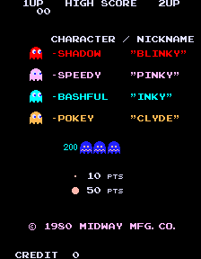

I refuse to believe that Pac-man, as an observant Jew, would feast on souls. However, I am going to postulate that Pac-man is a metaphor for the turmoil inside the Jewish soul- specifically, Pac-man is the yetzer hara. And what else could he be? He does nothing other than devour, and devour, and destroy. He does not stop to daven, and he does not say brakha before he eats the wee dot thingies.

Above we see the four ghosts, Inky, Winky, Pinky, and Clyde. I postulate that each of them represent a different Jewish virtue. It is not Pac-man’s job to destroy them, but it is in his nature- it is the job of the ghosts to corral Pac-man and keep him from taking control of the soul, as represented by a maze. Clyde, the yellow ghost, is the same colour as an etrog. His endless wandering reminds us of the wandering we did in the desert, yet like the other ghosts he still does the customs of a Jew, and therefore we may call him Zikaron (remembrance). Inky, as we see, is also called Bashful. Therefore she represents tzniut, or modesty. However, the name Inky could also be a reference to the ink in which the Torah is written- this ghost is a scholar! Inky represents not only the learning of tzniut, but the application of tzniut, and for that she is called both Inky and Bashful. Pinky is pink, a colour associated with young children, and especially girls. Therefore Pinky represents new life and femininity- Pinky is a Jewish mama, maintaining spiritual influence over her family. The Talmud
says that when a pious man marries a wicked woman, the man becomes wicked, but when a wicked man marries a pious woman, the man becomes pious. Blinky, or Shadow, is a stand-in for the Plague of Darkness in Egypt, because of his name, and yet also he warns of darkness of the spirit, and the perils of benightedness- he goes all blue and woogy not to let Pac-man win, but to warn Pac-man that winning comes at a terrible price.
Rabbis, it is time for the morning posts.
But the sages say:
Are we then to conclude that Pac-Man is a training exercise for our baser selves? That, in engaging with the text, we only learn how to defeat and devour our own God-given virtues? Chalilah!
Pac-Man is a game in which we-the-player, as represented by Pac-Man, wander through a monotonous and confusing landscape that is seemingly without end. Moreover, we are commanded by divine decree to eat the mysterious food that has been placed before us, which is bland and bright and without distinguishing feature. Clearly this can be nothing other than an analogy for the forty years that the Jews spent wandering in the desert, subsisting on manna, before they reached Eretz Yisroel.
Pac-Man, like the Jews, is on every side beset by dangerous enemies who would destroy him. But, as our ancestors did, he has the power to fortify himself with the Power Pellets of righteous conduct – and when he does this, no enemy can stand before him.
The ghosts, of course, represent the particular perils with which the Jews contended during their wandering.
What then are we to make of Blinky, the ghost stained red like blood, who follows ever at Pac-Man’s heels?
This is a representation of the Pharaoh of Egypt, who sought to hunt us down when we fled from his land, and by extension of all enemy peoples who would wreak violent harm upon the Jews. Blinky is an obviously hostile force, chasing directly after Pac-Man as he does, and the spiritual danger that he poses is the danger of despair; if we turn back from our God-ordained quest, or even if we cease to move forward, he will be upon us. As it is written:
And the LORD said unto Moses: How long will this people despise Me? and
how long will they not believe in Me, for all the signs which I have
wrought among them? (Num. 14:11)
And what of Pinky, the ghost blushing with the pink of concupiscence, who endeavors to meet Pac-Man on his path?
This is a representation of the daughters of Moav, who lured the Jews into sin, and by extension of all those who would present carnal and worldly temptation. Pinky wishes for Pac-Man to fall into her clutches, and so she tries to place herself wherever he is going. There will always be a Pinky seeking to draw you away from piety and proper behavior. And by the time you have run into her, it may already be too late! To avoid her, you must be self-willed in your movements, and travel down paths where she is unlikely to be – or else take up your Power Pellet, and make yourself proof against all temptations. Otherwise, sins of concupiscence will surely lead to the profaning of the Divine Name. As it is written:
And Israel abode in Shittim, and the people began to commit harlotry with the daughters of Moab.
And they called the people unto the sacrifices of their gods; and the people did eat, and bowed down to their gods.
(Num. 25:1-2)
And what of Inky, the blue ghost whose movements are so erratic and peculiar?
This is a representation of Balaam the sorcerer, who sought to curse the Jews, and by extention of all those who would use wicked ideologies and creeds to destroy Judaism through their words. Just as Inky’s movements are secretly dependent upon Blinky’s movements, so we may be sure that ungodly ideas, however appealingly they may be packaged, are secretly serving the ends of hostile powers. But Inky is far trickier than Blinky. We cannot easily predict his movements. And so we must be vigilant and wise – and so we must have faith that the Power Pellet will come to us, as divine providence shielded the Israelites from Balaam’s magic. As it is written:
And when Balaam saw that it pleased the LORD to bless Israel, he went
not, as at the other times, to meet with enchantments, but he set his
face toward the wilderness. (Num. 24:1)
And what of Clyde, the fiery orange ghost who pursues when Pac-Man is far, but flees when Pac-Man approaches?
This is a representation of Korach and his sons, who in their priestly pride brought strange fire before God, and by extension of every kind of pious vanity. To abandon the Law because you think yourself too great for it is, ultimately, an act of foolishness and carelessness – no one who is truly paying attention could make such an error! – but if you wander down strange roads for which you are not prepared, it may sneak upon you. As it is written:
And he spoke unto Korah and unto all his company, saying: In
the morning the LORD will show who are His, and who is holy, and will
cause him to come near unto Him; even him whom He may choose will He
cause to come near unto Him.
(Num. 16:5)
And what of the bonus fruit?
This is of course a representation of God’s promises of Eretz Yisroel, where the earth overflows with every kind of bounty.
And what of the weird Galaxian thing?
This question will be answered when Moshiach comes.